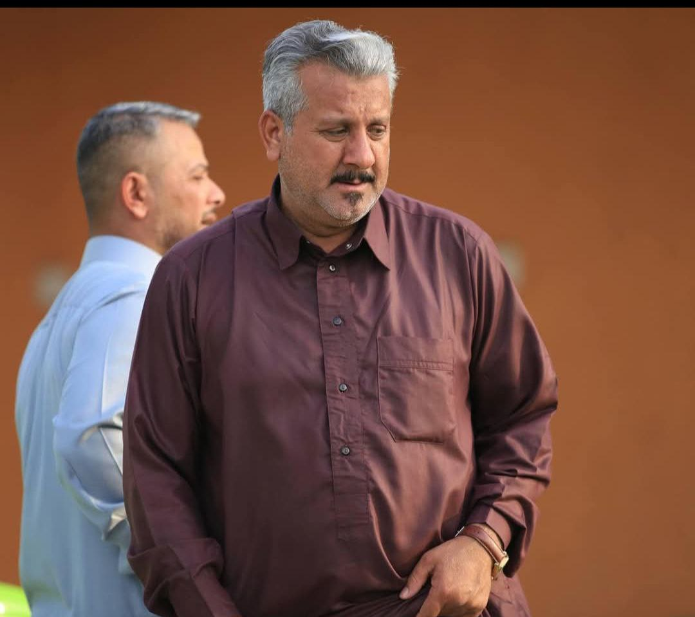
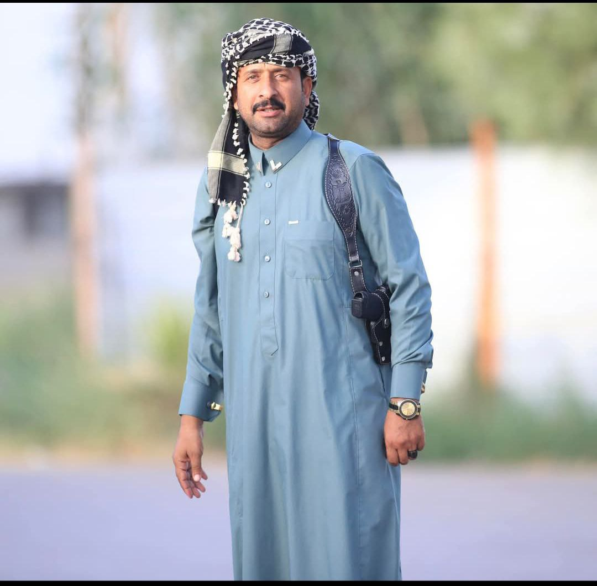

إرث العائلة
أجيال تحمل القيم والمبادئ الأصيلة
رغم مسؤولياته الكبيرة والمتعددة، اهتم الشيخ ناجي بتربية أبنائه على القيم نفسها التي تربى عليها، فكان مثالاً للأب الحكيم الذي يورث القيم والأخلاق قبل المال والجاه. فالقيم الأصيلة هي الثروة الحقيقية التي لا تفنى.
أركان
نجل الشيخ ناجي
القيادة
الحكمة

مشعان
نجل الشيخ ناجي
الكرم
الشجاعة

قاسم
نجل الشيخ ناجي
العدالة
الإخلاص
قحطان
نجل الشيخ ناجي
الحكمة
التفاني

عدنان
نجل الشيخ ناجي
رحمه الله تعالى وأسكنه فسيح جناته
الفاتحة على روحه الطاهرة
"التربية الصالحة هي أعظم إرث يمكن أن يتركه الوالد لأبنائه"